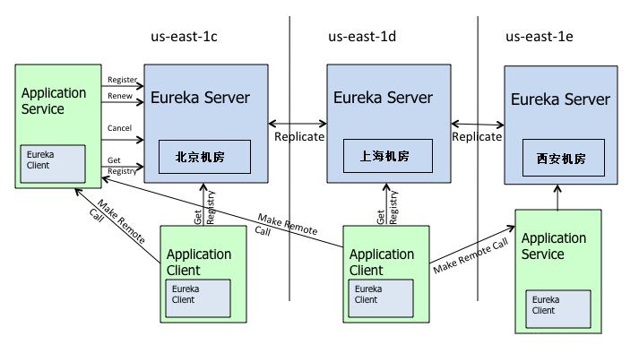

Eureka 里面的重要角色整体上可以分为两个主体：Eureka Server 和 Eureka Client。
注册中心服务端主要对外提供了三个功能：
（1）服务注册 服务提供者启动时，会通过 Eureka Client 向 Eureka Server 注册信息，Eureka Server 会存储该服务的信息，Eureka Server 内部有缓存机制来维护整个注册表。
（2）提供注册表 服务消费者在调用服务时，如果 Eureka Client 没有缓存注册表的话，会从 Eureka Server 获取最新的注册表。
（3）同步状态 Eureka Client 通过注册、心跳机制和 Eureka Server 同步当前客户端的状态。
Eureka Client 是一个 Java 客户端，用于简化与 Eureka Server 的交互。Eureka Client 会拉取、更新和缓存 Eureka Server 中的信息。因此当所有的 Eureka Server 节点都宕掉，服务消费者依然可以使用缓存中的信息找到服务提供者，但是当服务有更改的时候会出现信息不一致。
服务的提供者，将自身注册到注册中心，服务提供者也是一个 Eureka Client。当 Eureka Client 向 Eureka Server 注册时，它提供自身的元数据，比如 IP 地址、端口，运行状况指示符 URL，主页等。
Eureka Client 会每隔 30 秒发送一次心跳来续约。 通过续约来告知 Eureka Server 该 Eureka Client 运行正常，没有出现问题。默认情况下，如果 Eureka Server 在 90 秒内没有收到 Eureka Client 的续约，Server 端会将实例从其注册表中删除，服务续约的两个重要属性：
xxxxxxxxxx服务续约任务的调用间隔时间，默认为30秒eureka.instance.lease-renewal-interval-in-seconds=30服务失效的时间，默认为90秒。eureka.instance.lease-expiration-duration-in-seconds=90
当 Eureka Client 和 Eureka Server 不再有心跳时，Eureka Server 会将该服务实例从服务注册列表中删除，即服务剔除。
Eureka Client 在程序关闭时向 Eureka Server 发送取消请求。 发送请求后，该客户端实例信息将从 Eureka Server 的实例注册表中删除。该下线请求不会自动完成，它需要调用以下内容：
xxxxxxxxxxDiscoveryManager.getInstance（）.shutdownComponent（）；
Eureka Client 从服务器获取注册表信息，并将其缓存在本地。客户端会使用该信息查找其他服务，从而进行远程调用。该注册列表信息定期（每30秒钟）更新一次。每次返回注册列表信息可能与 Eureka Client 的缓存信息不同，Eureka Client 自动处理。
如果由于某种原因导致注册列表信息不能及时匹配，Eureka Client 则会重新获取整个注册表信息。 Eureka Server 缓存注册列表信息，整个注册表以及每个应用程序的信息进行了压缩，压缩内容和没有压缩的内容完全相同。Eureka Client 和 Eureka Server 可以使用 JSON/XML 格式进行通讯。在默认情况下 Eureka Client 使用压缩 JSON 格式来获取注册列表的信息。
获取服务是服务消费者的基础，所以必有两个重要参数需要注意：
xxxxxxxxxx# 启用服务消费者从注册中心拉取服务列表的功能eureka.client.fetch-registry=true# 设置服务消费者从注册中心拉取服务列表的间隔eureka.client.registry-fetch-interval-seconds=30
当 Eureka Client 从注册中心获取到服务提供者信息后，就可以通过 Http 请求调用对应的服务；服务提供者有多个时，Eureka Client 客户端会通过 Ribbon 自动进行负载均衡。
默认情况下，如果 Eureka Server 在一定的 90s 内没有接收到某个微服务实例的心跳，会注销该实例。但是在微服务架构下服务之间通常都是跨进程调用，网络通信往往会面临着各种问题，比如微服务状态正常，网络分区故障，导致此实例被注销。
固定时间内大量实例被注销，可能会严重威胁整个微服务架构的可用性。为了解决这个问题，Eureka 开发了自我保护机制，那么什么是自我保护机制呢？Eureka Server 在运行期间会去统计心跳失败比例在 15 分钟之内是否低于 85%，如果低于 85%，Eureka Server 即会进入自我保护机制，如下提示：
xxxxxxxxxxEMERGENCY! EUREKA MAY BE INCORRECTLY CLAIMING INSTANCES ARE UP WHEN THEY'RE NOT. RENEWALS ARE LESSER THAN THRESHOLD AND HENCE THE INSTANCES ARE NOT BEING EXPIRED JUST TO BE SAFE.
Eureka Server 进入自我保护机制，会出现以下几种情况： （1）Eureka 不再从注册列表中移除因为长时间没收到心跳而应该过期的服务； （2）Eureka 仍然能够接受新服务的注册和查询请求，但是不会被同步到其它节点上（即保证当前节点依然可用）； （3）当网络稳定时，当前实例新的注册信息会被同步到其它节点中；
Eureka 自我保护机制是为了防止误杀服务而提供的一个机制。当个别客户端出现心跳失联时，则认为是客户端的问题，剔除掉客户端；当 Eureka 捕获到大量的心跳失败时，则认为可能是网络问题，进入自我保护机制；当客户端心跳恢复时，Eureka 会自动退出自我保护机制。
如果在保护期内刚好这个服务提供者非正常下线了，此时服务消费者就会拿到一个无效的服务实例，即会调用失败。对于这个问题需要服务消费者端要有一些容错机制，如重试，断路器等。
通过在 Eureka Server 配置如下参数，开启或者关闭保护机制：
xxxxxxxxxxeureka.server.enable-self-preservation=true
再来看看 Eureka 集群的工作原理。我们假设有三台 Eureka Server 组成的集群，第一台 Eureka Server 在北京机房，另外两台 Eureka Server 在深圳和西安机房。这样三台 Eureka Server 就组建成了一个跨区域的高可用集群，只要三个地方的任意一个机房不出现问题，都不会影响整个架构的稳定性。

从图中可以看出 Eureka Server 集群相互之间通过 Replicate 来同步数据，相互之间不区分主节点和从节点，所有的节点都是平等的。在这种架构中，节点通过彼此互相注册来提高可用性，每个节点需要添加一个或多个有效的 serviceUrl 指向其他节点。
如果某台 Eureka Server 宕机，Eureka Client 的请求会自动切换到新的 Eureka Server 节点。当宕机的服务器重新恢复后，Eureka 会再次将其纳入到服务器集群管理之中。当节点开始接受客户端请求时，所有的操作都会进行节点间复制，将请求复制到其它 Eureka Server 当前所知的所有节点中。
另外 Eureka Server 的同步遵循着一个非常简单的原则：只要有一条边将节点连接，就可以进行信息传播与同步。所以，如果存在多个节点，只需要将节点之间两两连接起来形成通路，那么其它注册中心都可以共享信息。每个 Eureka Server 同时也是 Eureka Client，多个 Eureka Server 之间通过 P2P 的方式完成服务注册表的同步。
Eureka Server 集群之间的状态是采用异步方式同步的，所以不保证节点间的状态一定是一致的，不过基本能保证最终状态是一致的。
Eureka 分区
Eureka 提供了 Region 和 Zone 两个概念来进行分区，这两个概念均来自于亚马逊的 AWS: region：可以理解为地理上的不同区域，比如亚洲地区，中国区或者深圳等等。没有具体大小的限制。根据项目具体的情况，可以自行合理划分 region。 zone：可以简单理解为 region 内的具体机房，比如说 region 划分为深圳，然后深圳有两个机房，就可以在此 region 之下划分出 zone1、zone2 两个 zone。
上图中的 us-east-1c、us-east-1d、us-east-1e 就代表了不同的 Zone。Zone 内的 Eureka Client 优先和 Zone 内的 Eureka Server 进行心跳同步，同样调用端优先在 Zone 内的 Eureka Server 获取服务列表，当 Zone 内的 Eureka Server 挂掉之后，才会从别的 Zone 中获取信息。
Eurka 保证 AP
Eureka Server 各个节点都是平等的，几个节点挂掉不会影响正常节点的工作，剩余的节点依然可以提供注册和查询服务。而 Eureka Client 在向某个 Eureka 注册时，如果发现连接失败，则会自动切换至其它节点。只要有一台 Eureka Server 还在，就能保证注册服务可用（保证可用性），只不过查到的信息可能不是最新的（不保证强一致性）。
（1）Eureka Server 启动成功，等待服务端注册。在启动过程中如果配置了集群，集群之间定时通过 Replicate 同步注册表，每个 Eureka Server 都存在独立完整的服务注册表信息； （2）Eureka Client 启动时根据配置的 Eureka Server 地址去注册中心注册服务； （3）Eureka Client 会每 30s 向 Eureka Server 发送一次心跳请求，证明客户端服务正常； （4）当 Eureka Server 90s 内没有收到 Eureka Client 的心跳，注册中心则认为该节点失效，会注销该实例； （5）单位时间内 Eureka Server 统计到有大量的 Eureka Client 没有上送心跳，则认为可能为网络异常，进入自我保护机制，不再剔除没有上送心跳的客户端； （6）当 Eureka Client 心跳请求恢复正常之后，Eureka Server 自动退出自我保护模式； （7）Eureka Client 定时全量或者增量从注册中心获取服务注册表，并且将获取到的信息缓存到本地； （8）服务调用时，Eureka Client 会先从本地缓存找寻调取的服务。如果获取不到，先从注册中心刷新注册表，再同步到本地缓存； （9）Eureka Client 获取到目标服务器信息，发起服务调用； （10）Eureka Client 程序关闭时向 Eureka Server 发送取消请求，Eureka Server 将实例从注册表中删除；
讲了 Eureka 核心概念、Eureka 自我保护机制和 Eureka 集群原理。通过分析 Eureka 工作原理，我可以明显地感觉到 Eureka 的设计之巧妙，通过一些列的机制，完美地解决了注册中心的稳定性和高可用性。Eureka 为了保障注册中心的高可用性，容忍了数据的非强一致性，服务节点间的数据可能不一致， Client-Server 间的数据可能不一致。比较适合跨越多机房、对注册中心服务可用性要求较高的使用场景。